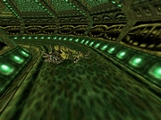
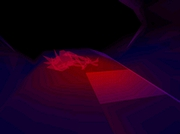
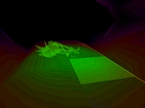
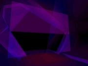
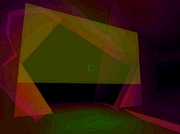
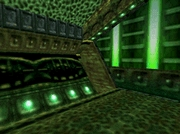
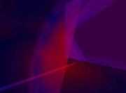
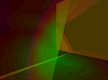

|
| Mysteres
de Perfect Dark : Abysses |
| Allez
directement vers le Skedar Mort et sortez soit les Rayons X soit le Farsight.
Voilà ce que vous devriez voir. C'est bizarre, mais y a une sorte
de Plaque en surbrillance non ? Un Passage Secret ? En s'approchant plus
près de la Plaque (qui est invisible à la base) vous verrez
qu'elle tremble, du moins celle qui est visible, c'est à dire la
Première. |



Autre
chose étrange. Dès que vous etes devant la Porte juste avant
le 1er Téléporteur, sortez soit les Rayons X soit le Farsight.
Vous devriez remarquer une Plaque Invisible qui n'existe pas physiquement.
Comme une Vitre, mais qu'on pourrait traverser. Les Trois Premières
Photos montrent juste l'endroit ou ça se passe, et le Gros Rectangle
que l'on voit est juste la Porte qui s'ouvre. Les
Trois Dernières Photos montrent où se trouve la Fameuse
Plaque Invisible. On peut tourner autour, la traverser, c'est vraiment
bizarre. Je me demande vraiment ce qui a bien pu se passer. |
 
  